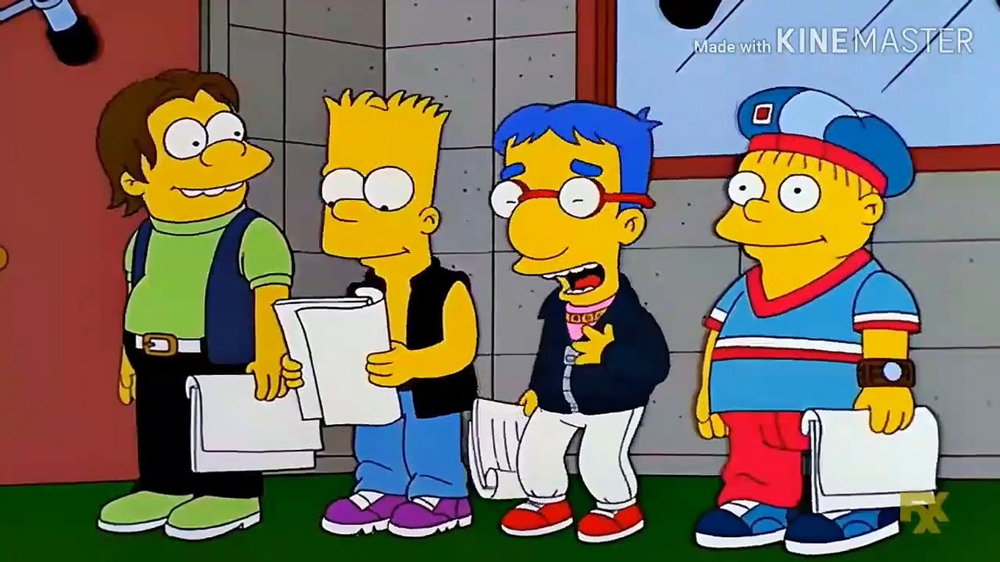
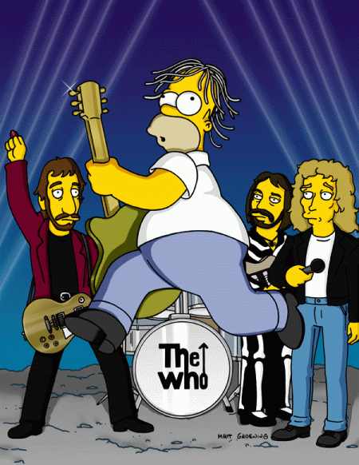

Bienvenidos a CompuMundoHiperMegaRed
Aquí podras encontrar contenido de los Simpsons, hecho por personas amarillas.
Grupos musicales presentes en el universo
Los Borbotones

Conocidos como The Be Sharps en inglés y Los Solfamidas en España, Los Borbotones es un grupo de cantantes formado inicialmente por Homero Simpsons, Apu Nahasapeemapetilon, Seymour Skinner y el Jefe Gorgory. Luego Gorgory es reemplazado por Barney Gómez. Esta banda nace en los 80 como forma de parodia de The Beatles. Su éxito "Baby on board" fue escrita por Homero.
Banda de Luxo
Nombrados como Party Posse en inglés y en España como Panda Tope, fueron una banda musical pop que formaron Bart, Milhouse, Nelson y Ralph. Surge como parodia de New Kids on the block.
The Who
El grupo formado en 1962, actuó como sí mismos en el capítulo "A tale of two Springfields", durante el derrumbe del muro que dividía la ciudad.